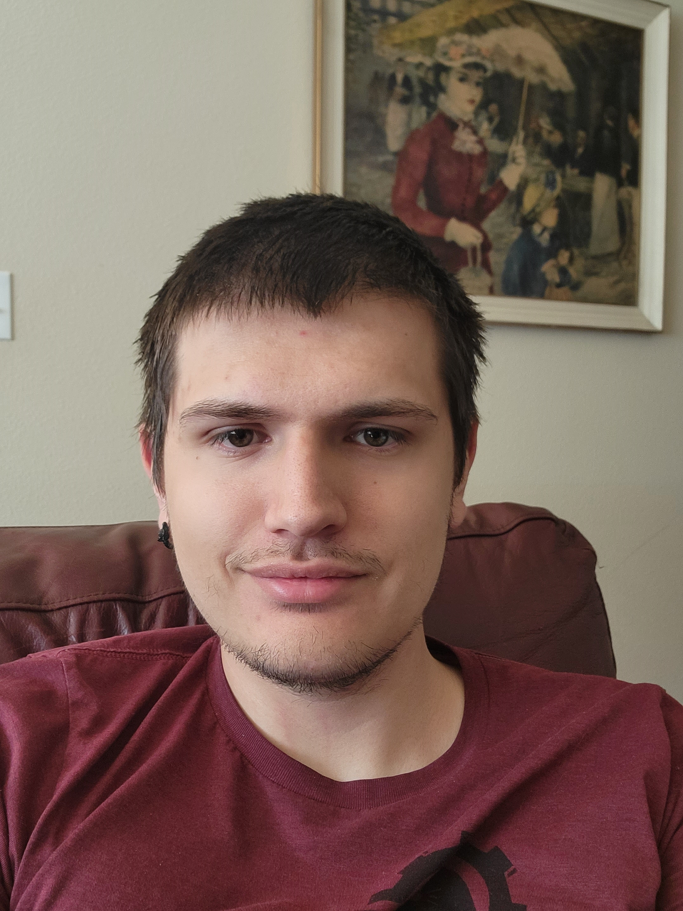

About

I graduated from Portland State University with my Bachelor's in
computer science in june of 2023. I am working in my free time to
learn about computer graphic design and application development.
I enjoy legacy boardgames and am currently playing through Aeon
Tresspass Odyssey. I have 2 rescue cats, Mononoke and Orthos that I
take care of with my wife.
Previous Work
Since 2019 I have been working for Vanguard EMS Inc. During my time
at this company I have always worked closely with Test Automation
Engineers. Before I graduated, in december 2022 I took on that role and
have since created several programs for Vanguard. Unfortunately it
is an ITAR facility and I cannot share any of the programs code.
I have worked on a very large project to automate a manual
test reducing the time of the test from 45 minutes to 8 minutes.
I created a project that reads measurements from a multimeter and writes
them to a file in CSV format for import into excel.
I have also
created a program that executes command line arguements on multiple applications
and returns the responses to the user in a readable format.
Projects
Pacstar ETL
This was my senior project. During this project I worked with a group of
six other students. We were tasked with the company Pacstar to make a
program that they would incorporate into their company process. What Pacstar
needed was a program that extraced their test data, cleaned it up, then uploaded
it to a database they created. One unique part of this project is that the team
emulated a Pacstar software engineering team. This included weekly check-ins and
using the same technologies as them such as C#, Jira, and Confluence. As an ETL program this
project had three major parts.
The first part of the project was the extraction.
The tests that Pacstar ran resulted in hundreds of thousands of lines per test. Our
program extracted only relevent information which was determined by Pacstar.
The second part of the program is tranformation. While we got the relevent data locations
not all of the data was correct. We sanatized the data removing any unwanted characters
that could cause security risks, and making sure the data was in the correct format.
The last part of the program was loading the extracted and transformed data into
Pacstars database. Knowing the structure of the data and database made creating the SQL
commands easy.
TriMet Bus Heat Map
For this project I made a script using python that was called automatically with google cloud
platform once per day. I then cleaned this data by removing empty fields and fields that didn't
meet assumptions about the data, such as the bus needing to exist on earth. This data was loaded
into a SQL database. After three months this data was queried and the resulting data was translated
and used by a map API to show periodic speeds of buses in the TriMet bus system.
DND DM Random Generator
This program is a personal project that I am developing. It is currently on hold while I work
on the ray tracer challenge. The purpose of this program is to randomly generate information
for dungeon masters to use. This project is heavily prone to scope creep. Before any scope creep
occurs the information I want generated is a shops inventory. This will include the information
for the item type, subtype, description, cost, and name. The amount of information might increase
if necessary. The user will be able to create, save, load, or delete the SQL database that the information
is stored in. I also intend for the random results to be written to a document so the user will be
able to reference them later. The reason this project is prone to scope creep is I can extend it to include
randomly generating encounters, npcs, items, spells, treasure hoards, or any other information that has
the dungeon master rolling on a random table.
This project is meant only for personal use,
and to show my abilities creating desktop applications.
Github Here
The Ray Tracer Challenge
I am working through the book The Ray Tracer Challenge by Jamis Buck. The purpose is to create a ray tracing
engine from scratch. The book is language agnostic and is only directing me by giving me unit tests that I need
to build the functions for. It is giving me experience interpreting instructions, test oriented programming, and
linear algebra. I will update this as I progress through the book, gain more experience, and add more code to my
Github.
Github Here
Contact Info
Phone: (541)-891-7681
Email: Anteny30@gmail.com